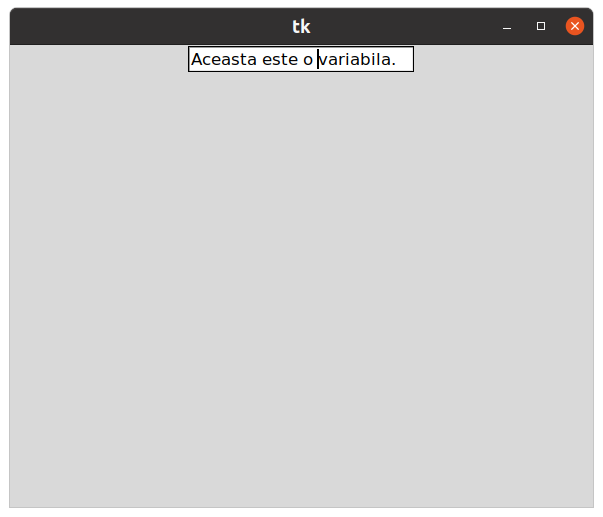

Tkinter permite crearea de interfețe grafice(GUI) cu care utilizatorul poate interacționa.
#!/usr/bin/python3
# -*- coding: utf-8 -*-
# RUN: python3 fereastra.py
#---------------------------------------------------
import tkinter as tk
class App(tk.Frame):
def __init__(self, master):
super().__init__(master)
self.pack()
self.entry = tk.Entry()
self.entry.pack()
# Create the Application variable.
self.contents = tk.StringVar()
# Set la o anumita valoare
self.contents.set("Aceasta este o variabila.")
self.entry["textvariable"] = self.contents
self.entry.bind('<Key-Return>', self.print_contents)
def print_contents(self, event):
print("Acesta este continutul: ", self.contents.get())
root = tk.Tk()
myapp = App(root)
myapp.mainloop()
$ python3 fereastra.py

Tkinter - Librarie Python pentru crearea interfetelor grafice.
https://docs.python.org/3/library/tkinter.html